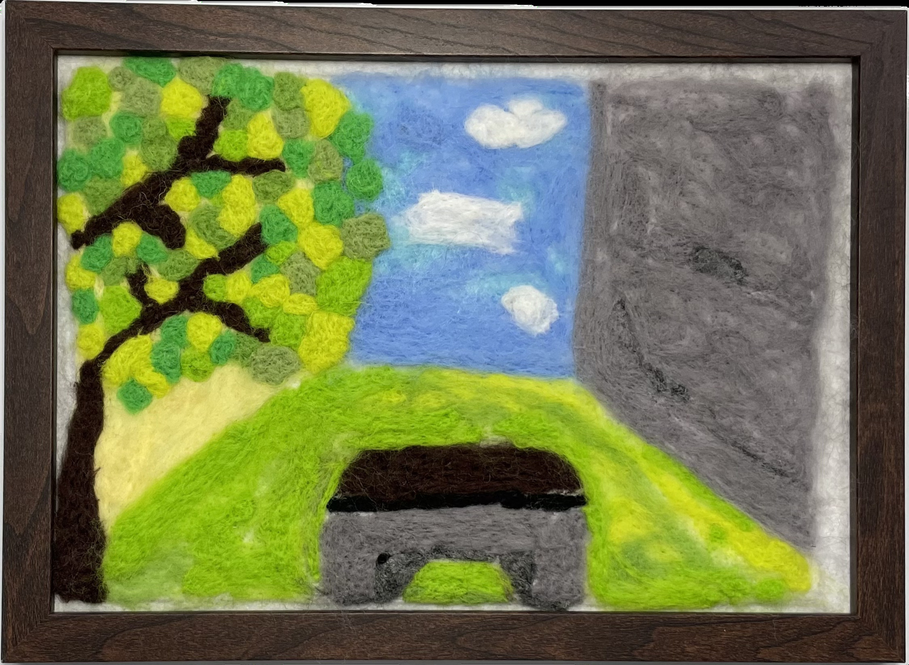

作品名稱：最有回憶的椅子
作者姓名：謝采妮
作品主題：紅磚道兩側的椅子
作品敘述：我最難忘的校園角落，是一張帶著歲月痕跡的椅子所在的靜謐一隅。在這裡，我度過了無數時光，或埋首學習，或與朋友歡笑，或靜靜放鬆。這些微小而珍貴的瞬間讓我深刻感受到時光的流轉，也讓我明白，每一個看似不起眼的時刻，都在悄然塑造著我們。
The most memorable spot on campus is a quiet corner with a nostalgic chair, where I have spent countless moments studying, laughing with friends, and simply relaxing. These little spaces remind me of how time flies and how every small moment quietly shapes who we are.